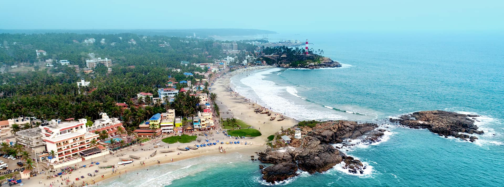
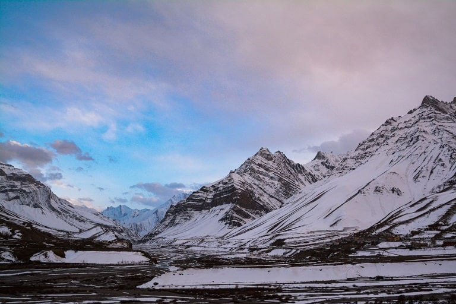
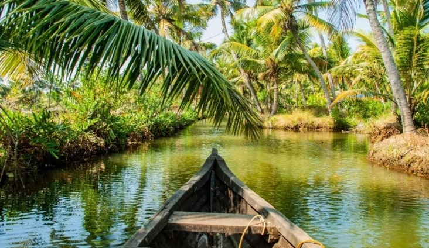
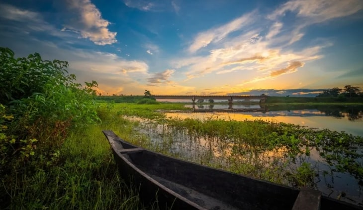

Tourist Destinations in India
Some Famous Places in India
Dal Lake,Jammu and Kashmir
An urban lake fed by River Jhelum, it covers an area of 18-22 square kilometres and is the iconic site for shikara rides, houseboat stays and floating markets.
Golden Temple, Punjab
Also known as Sri Harmandir Sahib, Golden Temple is considered to be the most important pilgrimage site amongst Sikhs and will leave you in awe with its jaw-dropping gold and marble edifice.
Badrinath Temple, Uttarakhand

Badarinath or Badarinarayana Temple is a Hindu temple dedicated to Vishnu. It is situated in the town of Badrinath in Uttarakhand, India. The temple is also one of the 108 Divya Desams dedicated to Vishnu—holy shrines for Vaishnavas—who is worshipped as Badrinath.
Hawa Mahal, Rajasthan

Also called as 'The Palace of Winds', the honeycomb-shaped palace features 953 jharokha-style windows and was built by Maharaja Sawai Pratap Singh to allow the court ladies to enjoy the city processions.
Shree Mahakaleshwar Temple,Madhya Pradesh

A revered holy site for Hindus, the temple is dedicated to Lord Shiva. The temple is architected in Chalukya & Maratha styles and houses a Shiva Lingam which is believed to be Swayambhu (self-manifested).
Baga Beach, Goa

One of the most popular beaches in Goa, Baga Beach offers quirky beach-side shacks and a number of thrilling water sports.
Darjeeling, West Bengal

At the foothills of the Himalayas, Darjeeling abounds in timeless serenity and attracts holidaymakers with its rolling tea plantations, views of Mount Kanchenjunga and age-old monasteries.
Shillong, Meghalaya
The 'Scotland of the East', Shillong offers scenic vistas complete with lakes, waterfalls and mountain peaks that make it one of the prettiest hill stations in the region.
Lakshadweep Islands

Lakshadweep, the group of 36 islands is known for its exotic and sun-kissed beaches and lush green landscape. The name Lakshadweep in Malayalam and Sanskrit means 'a hundred thousand islands'
Meenakshi Amman Temple,Tamil Nadu
Set on the banks of the Vaigai River, Meenakshi Temple is dedicated to Goddess Parvati and Lord Shiva. It is widely recognised for its architecture and 14-coloured multi-tiered gopuram.
Check out the weather conditions of the you wanna go
Want to find places of specific type of your interest
No Worries...We got your back
Check out the option that interests you the most
Beaches in India
Goa
Popularly known as India's party capital, Goa seduces travellers from all around the globe with its boho beaches, ancient churches, majestic forts and unbeatable nightlife!
Om Beach

Om Beach is a major tourist attraction in the coastal city of Gokarna, located in North Canara district. One of the acclaimed beaches in the country, Om Beach takes the shape of an 'Om', a Hindu spiritual symbol.
Tarkarli
Tarkarli is a quaint village in Maharashtra, and home to mesmerizing backwaters, stunning white sand beaches and serene temples. Tourists can also sign up for exciting water sports here!
Diu
Once a Portuguese colony, Diu is a small island city dotted with beaches from all sides. It also showcases a rich heritage and exquisite architecture.
Kovalam
Dotted with swaying palms and fondly known as the 'Paradise of the South', Kovalam is a tranquil seaside town nestled along the picturesque coastlines of the Arabian Sea.
Mandarmani Island
Located in the small and quaint village of Mandarmani, this beach is a popular getaway for its scenic beauty and simple appeal. If you are looking to have fun on jet skis and banana boats, this beach is ideal.
Hill Stations in India
Manali

Regarded to be one of the best hill stations in India, Manali is a heaven for all the snow lovers. With delicate temperatures during the summers, and chilling weather during the winters, Manali is one of the peaceful places to visit in North India.
Gulmarg

Boasting the scenic beauty of the ever-wonderful Jammu and Kashmir, Gulmarg stands on a different level among all the hill stations in North India. This beautiful hill station in India is the most sought-after place among all the travellers in India and abroad as well.
Kasol
The ideal backpacker's destination, Kasol is a suburb set on the banks of the river Parvati. There are many places to visit in Kasol such as the Malana Village, Parvati River and Tirthan Valley.
Nainital
Nainital is a heaven on earth. Well recognised as the Lake District of India, it is one of the best places to beat the heat in the scorching summer. With ancient temples and jaw dropping sceneries to its credit.
Srinagar
Lying on the banks of the river Jhelum, Srinagar is certainly a beauty owing to its lovely houseboats, historic gardens, wandering rivers and impeccable climate. The place boasts of the largest tulip garden in Asia.
Haldwani
If you are looking for a laid back vibe that is accompanied by panoramic views, Haldwani is the hill station for you. It comes replete with a rich culture and history. Those interested in hiking, photography and trekking will surely have a great time here.
Religious Places in India
Vaishno Devi
Vaishno Devi (also known as Mata Rani, Trikuta, Ambe and Vaishnavi) is a manifestation of the Hindu mother goddess Lakshmi sometimes in some beliefs Vaishno Devi is considered a manifestation of goddess Mahalakshmi. Vaishno Devi is worshipped as a combined avatar of the goddesses Mahakali, Mahalakshmi, and Mahasaraswati. Additionally, she is seen as the potency of Hari or Vishnu.
Varanasi
One of the oldest continuously inhabited cities in the world, Located on the banks of the Ganges River in the state of Uttar Pradesh, India, it is believed to be the abode of Lord Shiva and is famed for its ghats, where devout Hindus perform rituals and cremations.Never miss Ganga aarti if you are going Varanasi
Haridwar
Haridwar, situated on the banks of the River Ganges in Uttarakhand, India, is one of the seven holiest places for Hindus. It is a major pilgrimage city where devotees gather, especially during the Kumbh Mela, to bathe in the holy waters and cleanse their sins. The Ganga Aarti at Har Ki Pauri is a captivating spiritual ritual that attracts thousands of visitors.
Mathura
Mathura, in Uttar Pradesh, is the birthplace of Lord Krishna, making it a pivotal spiritual center for Hindus globally. It resonates with tales of divine love, mysticism, and the playful antics of the god. Festivals like Janmashtami, celebrating Krishna's birth, transform the city into a vibrant spiritual epicenter.
Kanchipuram

Kanchipuram, in Tamil Nadu, is often referred to as the 'City of Thousand Temples.' A historic city, it holds immense significance in Hinduism and is also a major center for silk saree production. The temples here are not only places of worship but also marvels of Dravidian architecture.
Sringeri
Sringeri, nestled in Karnataka, is the site of the first matha established by the Adi Shankaracharya. The town, set on the banks of the Tunga river, is revered for its Vedic studies and teachings. The serene environment and spiritual significance make it a major pilgrimage site.
Deserts in India
Thar desert
The Thar Desert, also known as the Great Indian Desert, sprawls across the northwestern region of India, covering parts of Rajasthan, Gujarat, Haryana, and Punjab. This expansive desert landscape is a treasure trove of natural wonders, vibrant culture, and majestic architecture.
Rann of Kutch
The Rann of Kutch is a unique salt marshland located in the westernmost part of Gujarat, India. It is the largest salt desert in the world, spanning an area of over 16,000 square kilometres. During the dry season, the Rann of Kutch transforms into a mesmerising white desert.
Nubra Valley
The Nubra Valley is a desert-like landscape nestled in the lofty Himalayan mountains of Ladakh. It is a surreal place with towering dunes, turquoise rivers, and picturesque villages. Visitors can reach the valley via the picturesque Khardung La Pass, one of the highest motorable passes in the world.
Spiti Valley
Nestled in the trans-Himalayan region of Himachal Pradesh, Spiti Valley is a desert-like landscape that captivates with its rugged terrains, barren mountains, and ancient monasteries. Known as “Little Tibet,” Spiti Valley offers a unique blend of spiritualism, adventure, and tranquillity. The region is home to old Buddhist monasteries.
Cholistan Desert

Located in the southern part of Punjab and extending into Pakistan's Sindh province, the Cholistan Desert, also known as the Rohi Desert, is a desert region that offers a glimpse into the rustic life of the desert communities. The desert showcases vast stretches of dunes, isolated villages, and vibrant rural culture.
Kalo Dungar
Kalo Dungar, the highest point in Kutch, Gujarat, is a captivating destination for nature lovers and adventure seekers.You can also see migratory birds and learn about the enchanting folklore surrounding the hill. The tranquil atmosphere makes Kalo Dungar a perfect place to relax and escape the hustle and bustle of everyday life.
Monuments in India
India Gate

One of the most historical places in India, India Gate is located at the centre of New Delhi. This national monument of India commemorates 90,000 soldiers who lost their lives defending India between 1914 and 1921.
Jaisalmer Fort

Sitting majestically on a 125-meter-high hill, the majestic Jaisalmer Fort is situated at the heart of the city of Jaisalmer. This one of the heritage monuments of India was founded in 1156 AD by Rajput Rawal Jaisal and the fort was built during his reign.
Khajuraho Group of Monuments
The group of temples of Khajuraho testifies to the culmination of northern Indian temple art and architecture of the Chandella dynasty who ruled the region in the 10th and 11th centuries CE. Distributed over an area of 6 square km in a picturesque landscape.
Mysore Palace

Mysore Palace, also known as Amba Vilas Palace, is a historical palace and a royal residence. It is located in Mysore, Karnataka, India. It used to be the official residence of the Wadiyar dynasty and the seat of the Kingdom of Mysore.
Ajanta and Ellora Caves
The Ajanta Caves are 29 rock-cut Buddhist cave monuments dating from the second century BCE to about 480 CE in the Chhatrapati Sambhajinagar District of Maharashtra state in India. Ajanta Caves are a UNESCO World Heritage Site.
Charminar

The Charminar is a monument located in Hyderabad, Telangana, India. Constructed in 1591, the landmark is a symbol of Hyderabad and officially incorporated in the emblem of Telangana.
Islands in India
Andaman and Nicobar Island
The Andaman Islands are an Indian archipelago in the Bay of Bengal. These roughly 300 islands are known for their palm-lined, white-sand beaches, mangroves and tropical rainforests. Coral reefs supporting marine life such as sharks and rays make for popular diving and snorkeling sites.
Lakshadweep Island
Lakshadweep Island is an archipelago of 36 atolls. It lies off the coast of Kerala. However, not all islands are open for tourists; only a few are accessible with a valid permit. More than 93% of the population are Muslims. Alcohol is banned on most of the islands.
Munroe Island
It is an inland island in the Kollam district of Kerala. It is located near Ashtamudi Lake. It is a combination of 8 islands known as Islands of Kollam.
Elephant Island
The Elephanta Caves located here are UNESCO World Heritage Site. They represent the brilliant art and architecture of ancient India.
Charao Island
This Island is located in the Mandovi River. Many birds, such as eagles and purple herons, can be seen here. It has many Hindu temples and churches.
Majuli Island
Majuli Island is the largest riverine island in the world, located on the Brahmaputra River. It is also a UNESCO site. It includes many ethnic groups, such as Mishing, Deori, Koch, Ahom, etc. The main village is Naghmar village, where festivals and other cultural activities occur.